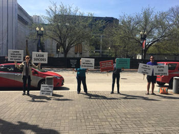
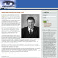
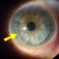

"Я врач... Я прошел обследование и был признан подходящим кандидатом для операции LASIK... Сейчас я прохожу обследование для пересадки роговицы на оба глаза... Я считаю, что от операции LASIK следует отказаться".; Отчет подан в FDA .
"Больше всего в моей жизни я сожалею о том, что не нашел ваш сайт до того, как проделал эту ужасную процедуру".; Электронное письмо от врача.
"Кто в здравом уме захочет пройти процедуру LASIK после просмотра эти фотографии ?" Электронное письмо от окулиста.
Июль 2022 года
fda принимает меры
чтобы предупредить пациентов lasik
В июле 2022 года Управление по санитарному надзору за качеством пищевых продуктов и медикаментов опубликовало проект руководства по лазерам LASIK, содержащий 25 страниц новых предупреждений для потенциальных пациентов, которым проводится LASIK.
Ознакомьтесь с новыми предупреждениями LASIK здесь
Ознакомьтесь с пресс-релизом FDA здесь
предупреждение lasik
Прислушайтесь к предостережениям окулиста и нескольких пациентов с LASIK, у которых возникли осложнения, которые могут изменить жизнь.. Избегайте LASIK!
Апрель 2018 Lasik-Акция протеста против самоубийств

Апрель, 2018: Акция протеста на собрании Американского общества катарактальной и рефракционной хирургии (ASCRS) в Вашингтоне, округ Колумбия. Пострадавшие пациенты-протестующие были встречены насмешками и словесными нападками со стороны хирургов LASIK. Узнайте о Самоубийства, связанные с LASIK, здесь .
Обновление от 23.11.2019: К сожалению, недавно мы узнали еще о нескольких побочные эффекты, связанные с лазерной хирургией глаза Сегодня число самоубийц достигло 28 (подозреваемых гораздо больше).
Новости cTV от 21 ноября 2019 года
Пациенты Lasik MD заявляют о повреждении нервов и подают коллективный иск Из статьи: По меньшей мере двое канадцев подают в суд на национальную сеть клиник лазерной хирургии глаза и просят других присоединиться к ним после того, как у них развилось редкое и чрезвычайно болезненное осложнение. Предполагалось, что Кристофер Уэлле и Кристел Терзян смогут лучше видеть после популярной плановой процедуры, но они утверждают, что операция на роговице, проведенная в клинике Lasik MD, вызвала неослабевающую боль в глазах. Уэлле является ведущим истцом в новом, первом в своем роде коллективном иске. Прочитать статью
14 ноября 2019 года новости cbs
По словам информатора, глазная хирургия LASIK должна быть снята с рынка Из статьи: Абрахам Рутнер сказал, что операция LASIK повредила его зрение и чуть не разрушила его жизнь. "Это опустошение, которое я даже не могу объяснить", - сказал Рутнер в интервью медицинскому обозревателю CBS News доктору Таре Наруле... [Эдвард] Бошник подсчитал, что он лечил тысячи пациентов с осложнениями LASIK... "По сути, мы игнорировали данные об искажениях зрения, которые сохранялись годами", - сказал Моррис Вакслер, советник FDA в отставке, который голосовал за одобрение LASIK. Теперь он говорит, что это голосование было ошибкой. Прочитать статью
1 июля 2019 года
"Уолл-стрит Джорнэл"
Когда обычная операция на глазу приводит к изнуряющей боли. Автор: Бетси Маккей. Из статьи: Кейли Паттерсон проснулась с острой болью в правом глазу на следующее утро после операции Lasik... Обеспокоенная, мисс Паттерсон несколько раз посещала своего хирурга и обычного окулиста в течение следующих нескольких недель. По ее словам, они неоднократно говорили ей, что все выглядит нормально. И все же малейшее движение - дуновение воздуха, луч света - вызывало у нее мучительную боль в голове. "Мне было больно, и никто не помогал мне", - сказала 33-летняя консультант по психическому здоровью. Спустя полтора года после операции мисс Паттерсон, наконец, узнала, почему она страдала. Специалист сообщил ей, что у нее состояние, известное как невропатическая боль в роговице. Прочитать статью Узнайте больше о боли после операции LASIK
11 ИЮНЯ 2018 ГОДА
"НЬЮ-ЙОРК ТАЙМС"
Затуманенное зрение, жжение в глазах: Это успех Lasik? Автор: Рони Кэрин Рабин. Из статьи: Даже сейчас остаются серьезные вопросы о краткосрочных и долгосрочных рисках и осложнениях этой все более распространенной процедуры. Исследование показало, что почти у половины всех людей, у которых до операции Lasik были здоровые глаза, впервые после процедуры развились зрительные отклонения. Почти у трети впервые развилась сухость глаз, осложнение, которое может вызывать серьезный дискомфорт. Авторы написали, что "пациенты, перенесшие операцию Lasik, должны быть надлежащим образом проинформированы о возможности развития новых визуальных симптомов после операции, прежде чем проходить эту плановую процедуру".; Прочитать статью
ВЗРЫВНОЙ ДОКУМЕНТАЛЬНЫЙ ФИЛЬМ О ЛАЗЕРЕ
Смотрите, как голландские кинематографисты разоблачают скрытые риски LASIK (с английскими субтитрами).
ИЗ УСТ
ХИРУРГИ LASIK
Хирурги LASIK говорят ужасные вещи, когда думают, что публика их не слушает... На Всемирном офтальмологическом конгрессе 2016 года ведущий хирург Lasik Питер Макдоннелл, доктор медицинских наук, признал, что Lasik создает нейротрофическая роговица , которые они не знают, как предотвратить или лечить. Не потребует ли это, чтобы они прекратили делать Lasik? В конце концов, они связаны клятвой Гиппократа "Не причинять вреда".
Цитата: "Третьей актуальной темой в рефракционной хирургии, по словам доктора Макдоннелла, является нейротрофия роговицы. Однако многое еще предстоит сделать. "Наши ограниченные знания приводят к ограниченной способности предотвращать и лечить это", - сказал он."; Источник
новости
В пресс-релизе, выпущенном компанией Avedro, которая продает медикаментозное лечение эктазии после операции Lasik, говорится: "; По оценкам, эктазия роговицы после рефракционной хирургии (Lasik) встречается примерно у 160 000 пациентов в Соединенных Штатах, что квалифицирует ее как орфанное заболевание." Ссылка на пресс-релиз
Лазерная хирургия глаза и хроническая боль, автор Брин Нельсон в журнале Mosaic Science. Ссылка на статью
ВЗРЫВООПАСНОЕ ИЗДЕЛИЕ в октябрьском выпуске журнала за 2015 год Потребители переваривают автор: репортер Кэтрин Элтон. Три бывших сотрудника FDA сейчас выступают против Lasik. Выдержка: "Вакслер и Бирс говорят, что клинические испытания, которые были использованы для подачи заявки на одобрение FDA устройств Lasik, имели недостатки, которые ставят под сомнение то, что процедура должна была быть одобрена с самого начала".;
ВАЖНОЕ СООБЩЕНИЕ
ДЛЯ AAO И ASCRS
В телевизионных дебатах 2010 года с доктором Моррисом Вакслером, хирургом LASIK, доктор Стивен Слейд сказал: "Пациенты, у которых были проблемы со старыми формами LASIK или даже другими формами рефракционной хирургии, снова, являются наше внимание сосредоточено, и мы сделаем всё для них, что мы, возможно, сможем.";
Рефракционные хирурги "должны" взять на себя ответственность за проблемы, которые они создают.
Защитники пациентов LASIK обращаются к Американской академии офтальмологии (AAO) и Американскому обществу катарактальной и рефракционной хирургии (ASCRS) с просьбой выделить средства фонда для оказания помощи пациентам после рефракционной хирургии, у которых наблюдались неблагоприятные результаты, в связи с обременительными расходами на реабилитацию, включая жесткие контактные линзы, корректирующие процедуры, лечение сухости глаз и многое другое. другие дорогостоящие методы лечения.
ПОСЛЕДНЕЕ ИССЛЕДОВАНИЕ FDA LASIK
ОБНАРУЖИВАЕТ ВЫСОКИЙ УРОВЕНЬ ПРОБЛЕМ
Результаты долгожданного Исследование качества жизни LASIK Был опубликовано на веб-сайте FDA 19 октября 2014 года официальный представитель FDA Мальвина Эйдельман, доктор медицины, обобщила результаты исследования, сказав: "Учитывая большое количество пациентов, проходящих процедуру LASIK ежегодно, у значительного числа пациентов могут возникать симптомы неудовлетворенности и инвалидизации ."
• До 46% пациентов, у которых до проведения LASIK не было никаких симптомов, сообщили о визуальных симптомах ( ореолы , взрывы звезд , яркий свет и призрак ) после операции LASIK.
• До 28% пациентов, у которых до LASIK не было симптомов сухости глаз, после LASIK развились симптомы сухости глаз.
• Почти 5% испытуемых были недовольны своим зрением после Lasik.
Читайте больше о Лазерная лента новостей . Важное сообщение для участников исследования PROWL .
Опрос врачей, перенесших лазерную операцию на глазу
подтверждает высокий уровень побочных эффектов
Паскуали и соавт. провели опрос врачей, перенесших лазерную операцию на глазу с 2000 по 2012 год, которая была опубликована в журнале катарактальной и рефракционной хирургии (JCRS). В колоссальной неудачной попытке представить результаты опроса в пользу LASIK редактор JCRS Ник Мамалис, доктор медицинских наук, выявил следующие высокие показатели послеоперационных побочных эффектов, о которых сообщили врачи-респонденты: " раздражение глаз (50%), яркий свет (43%), ореолы (41%) и [проблемы] со зрением при тусклом освещении (35,2%)." Источник: Мамалис Н. Лазерная коррекция зрения среди врачей: "польза пудинга в том, что его едят". J Рефракционная хирургия катаракты, март 2014 г.;40(3):343-4.
В редакционной статье Мамалис ссылается на поспешно собранные в индустрии LASIK ОБЗОР МИРОВОЙ ЛИТЕРАТУРЫ ПО LASIK , назвав его "исчерпывающим обзором". В своих поспешность чтобы противостоять негативной реакции прессы на слушания FDA 2008 года о проблемах с LASIK, возможно, авторы забыли упомянуть, что статьи, представленные в обзоре литературы, подтверждают двузначные показатели стойкой сухости глаз и проблем с ночным зрением после операции LASIK .
ДРУГИЕ НОВОСТИ
LASIK: Борьба, которую FDA не может выиграть с этической точки зрения автор: FDA watchdog / блоггер.
Профессор Гарварда обвиняет CDRH в неспособности защитить пациентов с LASIK
Защитники прав потребителей LASIK подают гражданскую петицию в FDA, требуя, чтобы эксимерные лазеры содержали предупреждение в виде черного ящика. Прочитайте историю
Ознакомьтесь с исследованием 21 пациента, у которых после операции LASIK развилась мучительная, неослабевающая боль в глазах, которое АМЕРИКАНСКАЯ АКАДЕМИЯ ОФТАЛЬМОЛОГИИ, по-видимому, не хотела, чтобы вы читали. Читать изучать
Призер Олимпийских игр по бобслею Стив Холкомб Попытка самоубийства
Хотя LASIK не упоминается в этом видео, проблемы со зрением у Холкомба начались после операции LASIK, согласно Книга Холкомба Хирурги LASIK обычно ставят неверный диагноз. эктазия после операции LASIK как "кератоконус" в попытке сдержать эту растущую эпидемию. (Примечание: Корректирующие процедуры, которым подвергся Холкомб, не были одобрены FDA для глаз после операции LASIK). Выдержка из книги Холкомба: "; Я годами носил контактные линзы и очки и не обращал на это внимания... Местный офтальмолог пришел в Центр олимпийской подготовки США в Лейк-Плэсиде и предложил бесплатные процедуры Lasik... После быстрого отбора было решено, что я буду отличным кандидатом, и я воспользовался этим преимуществом... Это было год назад, и я не только не стал лучше видеть, но мое зрение продолжало ухудшаться." Обновление: Холкомб был найден мертвым в возрасте 37 лет в своей комнате в Центре олимпийской подготовки США в Лейк-Плэсиде, штат Нью-Йорк, 6 мая 2017 года.
20.03.2012 - Письмо FDA в ASCRS: реклама LASIK, в которой не раскрываются риски, является незаконной
Отрывок: "... маркировка, одобренная FDA для каждого лазера, одобренного для LASIK, включает в себя риск развития синдрома сухого глаза, который может быть серьезным; возможную необходимость в очках или контактных линзах после операции; визуальные симптомы, включая ореолы, блики, звездочки и двоение в глазах, которые могут быть изнурительными; и потерю зрения. видение. FDA рекомендует включать эту информацию о рисках во все рекламные материалы, касающиеся одобренных FDA лазеров, используемых для LASIK."
Прочитай Письмо FDA в ASCRS от 20.03.2012 .
Если вам стало известно о рекламе, промо-материалах или продвижении LASIK в Интернете, в которых не раскрываются риски, противопоказания, предупреждения и меры предосторожности, пожалуйста, сообщите об этом в Управление по санитарному надзору за качеством пищевых продуктов и медикаментов. Мы разработали шаблон, который вы можете изменить, чтобы подать жалобу. Ложный рекламный шаблон .
Как ВЫ может помочь
Оставляйте свои комментарии и подписывайте петиция о прекращении применения LASIK Прочтите, что скажут более 1500 нынешних подписантов.
Если вы являетесь травмированным пациентом LASIK, вам следует отправьте отчет о медицинском наблюдении с Управлением по санитарному надзору за качеством пищевых продуктов и медикаментов. Ознакомьтесь с образцом Травмы, полученные с помощью LASIK, зарегистрированы в FDA .

Вы можете помочь распространить информацию о проблемах, связанных с LASIK. Добавьте ссылку на этот веб-сайт на своем веб-сайте или в блоге или разместите ссылку в любом месте, где обсуждается LASIK в Интернете.
Лоскуты LASIK никогда не заживают...

"Лазерный кератомилез in situ - это еще одна операция, при которой лоскут подвержен травматическому смещению потому что интерфейс кажется, это не заживает за исключением краев". (Канто и др., 2011)
"Хотя LASIK остается самой популярной рефракционной хирургической процедурой, становится очевидным, что во время операции поверхности роговицы разрезаются для создания срединного стромального лоскута, не удается полностью воссоединиться после операции хирурги могут просто отодвинуть передний роговичный лоскут несколько лет спустя. Такие пациенты... подвержены риску прогрессирующей потери зрения из-за общей слабости роговицы, которая может прогрессировать до эктазия или даже травматическое смещение незащищенного лоскута ."; (Ми и др., 2011)
Смотрите доказательство того, что лоскуты LASIK никогда не заживают";
Другие статьи, представляющие интерес
30.03.2013 - Интерес к LASIK ослабевает с 2008 года. Читать аннотацию
23.03.2013 - Немецкие исследователи обнаружили, что 28,3% обследованных пациентов с LASIK не имеют зрения, пригодного для управления транспортным средством, согласно немецким стандартам в отношении мезопического зрения и яркого света. Читать аннотацию
2/4/2013 - Глобальные новости 16x9 сообщают о лазерном аде Даниэля Муфлие .
26.11.2013 - Джо Тай, Обновленная информация о предупреждении LASIK
18.12.2012 - Управление по санитарному надзору за качеством пищевых продуктов и медикаментов предостерегает от ненадлежащей рекламы лазеров, предназначенных для коррекции зрения LASIK Прочитать пресс-релиз . В соответствии с пресс-релиз , поставщики услуг LASIK, получившие письма с предупреждением FDA, являются:
• 20/20 Институт Индианаполис ЛАСИК, Индианаполис
• Скотт Хайвер Visioncare Inc., из Дейли-Сити, Калифорния.
• Глазной институт Рэнда в Дирфилд-Бич, штат Флорида.
• Техасский офтальмологический центр, Беллер, Техас
• Офтальмологический институт Вулфсона, Атланта
12.12.2012 - Новое сообщение о случае: смещение лоскута спустя 10 лет после "без осложнений" операции LASIK. Прочитать статью
11/30/2012 - Доктору Николасу Каро предъявлено обвинение в растрате и мошенничестве с почтой .
15.11.2012 - Долгосрочное исследование показало, что примерно 6 из 1000 глаз развиваются после операции LASIK. эктазия . Ссылка на реферат
7/25/2012 - FDA "Имеет моральное обязательство" вмешиваться в случаи самоубийств
5.06.2012 - Герберт Дж. Невьяс, доктор медицины, Nevyas Eye Associates получил от FDA письмо с предупреждением за то, что не сообщил о серьезных повреждениях при проведении LASIK. Прочитанное письмо
15.05.2012 - Исследователи утверждают, что лоскут LASIK является "постоянным", "не прикрепляемым" и "обременительным". Источник
7.04.2012 - Результаты ретроспективного исследования LASIK небезопасен для военнослужащих .
3/9/2012 - Основатель LASIK подал в FDA заявку на новый препарат для лечения травм, вызванных LASIK
3/5/2012 - LasikComplications.com опубликовано в "Чайна Пост".
24.02.12 - В обновленной информации о судебном процессе по делу о халатности LASIK адвокат Тодд Кроунер сообщил, что хирург LASIK, Марк Лобанофф, доктор медицины., добивался увольнения и замены эксперта по обороне Джордж Уоринг, доктор медицины., как "некомпетентный" в результате "проблем с памятью". Истец выступил против ходатайства, отметив, что доктор Уоринг продолжает лечить пациентов, и никаких медицинских показаний под присягой в поддержку иска доктора Лобаноффа предложено не было. что его собственный эксперт был некомпетентен. Вместо этого истец утверждал, что ответчики пытались уволить доктора Уоринга из-за его неподходящей репутации в качестве эксперта, в том числе из-за того, что он заключил соглашение по обоюдному согласию в связи с гиперметропией. эктазия против него был подан иск о халатности; приостановление привилегий Глазного центра Университета Эмори за имплантацию хирургического устройства без согласия пациента; и судимость за нападение на стюардессу . Источник
15.02.2012 - Компания LASIK pioneer произвела "ошеломляющее впечатление" на компанию LASIK и больше не будет проводить процедуру, поскольку она нарушает его медицинскую этику. Прочитать статью
16.12.2012 - Моррис Вакслер, бывший руководитель отдела офтальмологических устройств FDA, сообщил о самоубийстве 28-летнего Винсента Уота из Лас-Вегаса, связанном с применением LASIK, комиссару FDA Маргарет Гамбург, доктору медицинских наук, и директору Центра устройств и радиологического здоровья FDA Джеффри Шурену, доктору медицинских наук, Дж.D. Прочтите письмо доктора Вакслера . Узнайте больше о ЛАЗИК и самоубийство .
Шокирующие видео
Известные хирурги LASIK разыгрывают комедийные сценки, высмеивающие травмированных пациентов LASIK, страдающих депрессией или склонных к суициду. Посмотрите выступление Парага Маджмудара, доктора медицины, в роли "доктора И.М. Самоубийцы" на съезде Американского общества катарактальной и рефракционной хирургии (ASCRS), где он поет песню "раздвигая границы этики".
Ниже, перейдите на 42 секунды, чтобы посмотреть комедийную сценку с участием доктора И. М. Суициала (Параг Маджмудар, доктор медицины), Уильяма Трэттлера, доктора медицины и Джоди Лучс, доктора медицины.
Прежде чем Ты Позволишь Им Резать Тебе Глаза
Смотрите серию видеороликов Джо Тая о лазерной терапии: Кампания за то, чтобы объявить LASIK вне закона , Желтые кровоподтеки и травмы, полученные с помощью LASIK , Что на самом деле означает "Идеальный кандидат", Экономика операции Lasik , Травма после операции Lasik и потеря производительности , Правда об усовершенствованиях Lasik , Сложность, О Которой Они Вам Не Расскажут , Синдром сухого глаза Lasik , Отраслевой кодекс молчания Lasik , Проверка целостности для хирургов Lasik .
GlobalTV 28.05.2011
Следователи работают под прикрытием, чтобы разоблачить ложь, которую сотрудники клиники LASIK и врачи рассказывают потенциальным пациентам. Бывший глава FDA, ставший разоблачителем, разоблачает коррупцию, связанную с одобрением FDA устройств LASIK. Молодая мать, страдающая от хронической сухости глаз после применения LASIK, рассказывает свою историю. Сын полицейского, который не смог смириться с осложнениями, связанными с лазерной резекцией, рассказывает историю своего отца.
MSNBC, 18.02.2011
Бывший чиновник FDA настаивает на прекращении операции LASIK.
12/16/2010
Новостной канал 7 WSPA
TLC обвинили в проведении LASIK неподходящим кандидатам. В коллективных исках и исках о врачебной халатности упоминаются лазерные центры TLC. Смотреть видео:
Апрель 2008 года
Слушания FDA по поводу LASIK
В ответ на протест общественности по поводу широко распространенных проблем, связанных с LASIK, 25 апреля 2008 года Управление по санитарному надзору за качеством пищевых продуктов и медикаментов провело открытое заседание, чтобы заслушать мнение группы экспертов и пациентов, пострадавших в результате операции. Смотрите презентации: